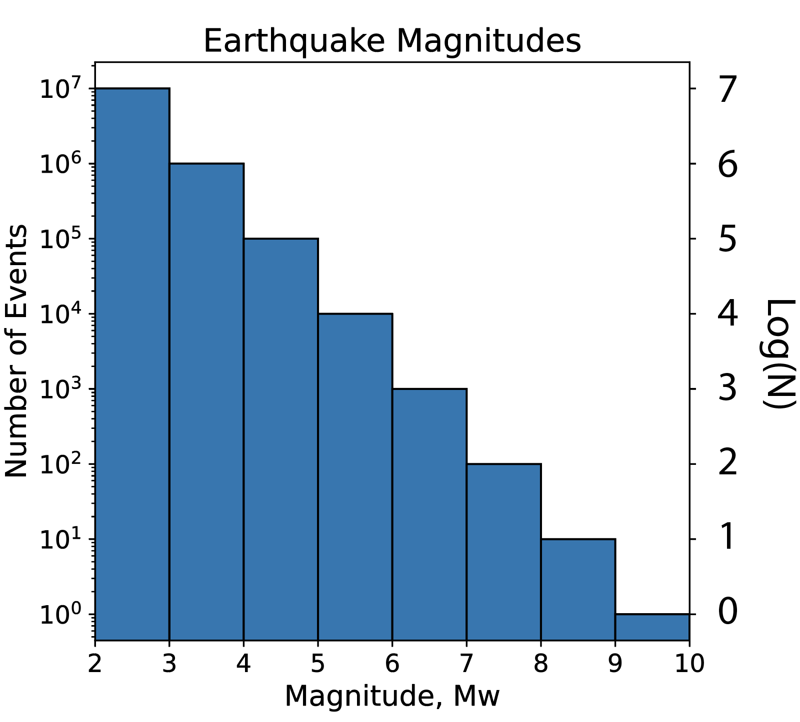
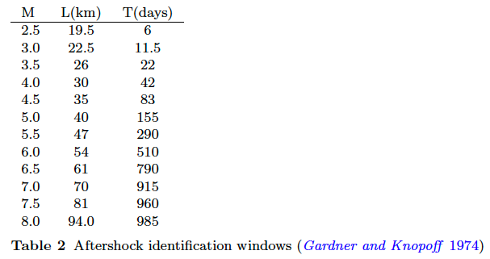
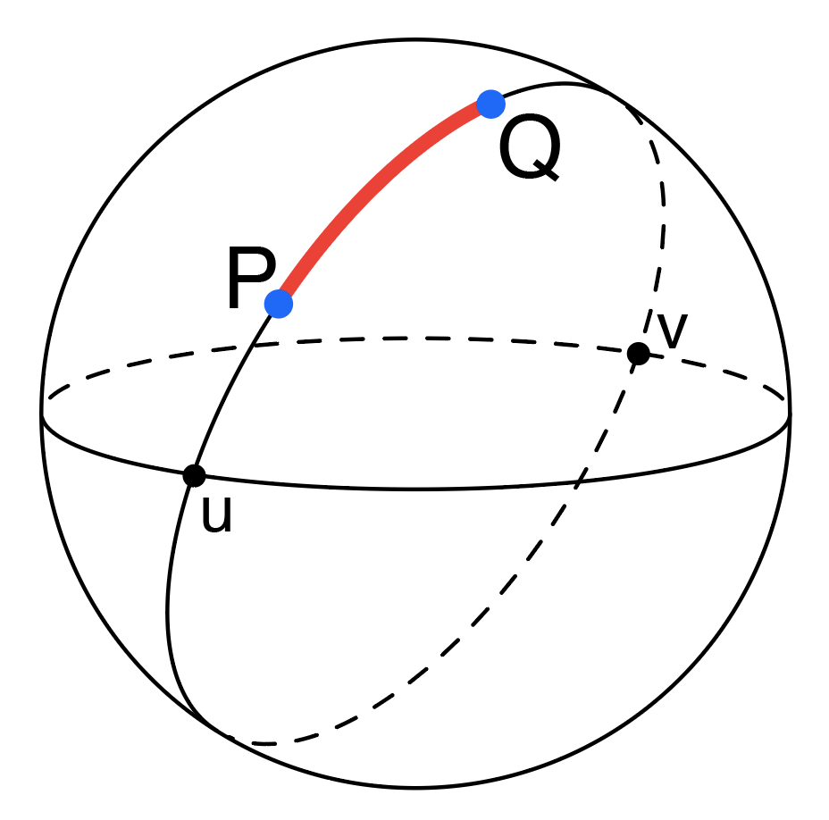

5.2 Earthquake Statistics¶
Outline:
Earthquake Magnitude
Earthquake Frequency – Gutenberg-Richter Law
Aftershocks – Omari’s Law
Seismicity Declustering
Additional Assigned Reading¶
A strange earthquake swarm lasted for years. Scientists finally know why from National Geographic
Earthquake Magnitude¶
Earthquake magnitude is an empirically determined measure of the size of an earthquake. Several methods have been used to estimate magnitude based on different aspects of earthquake waveform observations (seismograms).
The surface-wave magnitude (\(M_{s}\)) is defined as \(M_{s}=log_{10}\frac{A_{s}}{T}+1.66 log_{10}(\Delta)+3.3\) where \(A_{s}\) is determined from the maximum Rayleigh-wave amplitude, \(T\) is the period of the Rayleigh wave (18-22 seconds), and \(\Delta\) is epicentral distance in degrees. This magnitude scale works well for shallow earthquakes (<50km).
The body-wave magnitude (\(m_{b}\)) is defined as \(m_b=log_{10}\frac{A_{p}}{T}+Q(\Delta,h)\) where \(A_P\) is determined from the maximum P-wave amplitude, \(T\) is the period of the P-waves (<3 seconds), and \(Q(\Delta,h)\) is a correction for signal attenuation due to epicentral distance \(\Delta\) and depth \(h\).
Because of the way the ground responds to seismic waves \(M_s\) and \(m_b\) for the same earthquake often don’t agree well, except for small earthquakes. Above a certain size these magnitude scales exhibit magnitude saturation (\(M_s=8\) and \(m_b=6\)), where a larger earthquakes tend to radiate energy at longer periods than are commonly used to estimate \(m_b\). Thus the amplitude of several second P-waves does not grow as quickly as 20 second period surface waves. Magnitude saturation can even impact estimates of \(M_s\) for earthquake significantly larger than M8. Thus, a better magnitude scale has been formulated based on the seismic moment \(M_{0}=\mu SD\), where \(\mu\) is the shear modulus of the rock known as “rigidity” (units of Pascal), \(S\) is the area of the fault surface that ruptures, and \(D\) is the amount of slip (displacement) that occurs. Thus \(M_0\) is related to the energy of an earthquake with units of Joules.
The moment magnitude (\(M_w\)) is defined as \(M_w=\frac{2}{3} (log_{10} M_{0}) - 10.7\), in SI units. \(M_w\) is better for describing the magnitude of large earthquakes. \(M_{0}=\mu SD\) is determined by modeling synthetic seismograms of earthquakes with different fault geometries and matching them to the observed seismograms, where the amplitude of the waves is proportional to \(M_0\). Geologic field observations of fault length, taking aftershocks into account, with some observations of fault slip can be used to infer approximate estimates of \(M_0\).
Watch this video from IRIS:

Earthquake Frequency¶
We have seen in the earthquake catalogs we’ve examined so far, there are many more small earthquakes than large earthquakes. We estimated the relationship between earthquake frequency and magnitude to be roughly log-linear (Figure 1). More precisely this relationship can be modeled as log\(N=a-b M\) or \(N=10^{(a-bM)}\), where \(N\) is the number of earthquakes and \(M\) is magnitude, \(a\) and \(b\) are empirically determined constants that vary between seismic regions. This is known as the Gutenberg-Richter law. The value of \(b\) gives the slope of the log\(N(M)\) line and is close to -1.0, so there are ~10 times more M=4 earthquakes than there are M=5. The value of \(a\) is less interesting, it gives the y-intercept of the log\(N(M)\) line which just indicates the total number of earthquakes in the catalog, but a regional scales does describe the relatively level of seismic activity (i.e. a very active region would have a larger value of \(a\)). Determining the \(b\)-value of a seismically active region is an important step in estimating the seismic hazard, because it can be related to the average annual frequency of earthquake occurrence.
 Figure 1: Histogram of the logarithm of the number of earthquakes per year (logN) binned by magnitude.
Aftershocks¶
Large mainshock earthquakes are followed by smaller aftershock earthquakes as the crust adjusts to the main shock displacement. Aftershocks decrease in size and frequency with time after the main shock. The largest aftershock produced is typically ~1.2 magnitude smaller than its main shock. The number of aftershocks decays with time i.e. the number of aftershocks is inversely proportional to time, \(n(t) \propto \frac{1}{t}\). This decay called Omori’s law. Large main shock earthquakes have more and larger aftershocks, and their aftershock sequence can last for years. Aftershocks can be dangerous, collapsing structures and buildings damaged during the main shock.
Watch this video from IRIS:

Seismicity Declustering¶
In this week’s in-class exercise we will be programming a function for declustering a seismic catalog (filtering out aftershock earthquakes). Declusting splits a seismic catalog into events that are independent from each other (mainshocks) and events that depend on other events (aftershocks, foreshocks). The process of declustering is used in seismic hazard assessment and earthquake forecast models. Mainshock and aftershock earthquakes are not distinguishable by their seismograms, instead aftershocks are determined based on the statistics of their occurrence time and distance from a mainshock. We’ll call these criteria (time and distance) our Ttest and Dtest. We will be working with a catalog of all M0+ earthquakes that occurred within 100km of Berkeley from 1900 to 2018. Our algorithm for declustering will filter out events which occur within the aftershock windows in Table 1.

Table 1: Aftershock windows from Gardner and Knopoff, 1974.
Source: van Stiphout, T., J. Zhuang, and D. Marsan (2012), Seismicity declustering, Community Online Resource for Statistical Seismicity Analysis, doi:10.5078/corssa-52382934.
For each earthquake in the catalog we will calculate the distance and time interval to the other earthquakes in the catalog, and test if they are within these windows. To compute the distance between events we will use the Great-circle distance equations. The distance \(d\) between two points on the surface of a sphere is given by \(d=r\theta\), where \(r\) is the radius of the sphere and \(\theta\) is the angular separation between the points (in radians) (Figure 2). \(\theta = 2 \mathrm{sin}^{-1}\sqrt{\mathrm{sin}^{2}\left ( \frac{\left | \gamma_{P}-\gamma_{Q} \right |}{2} \right )+\mathrm{cos}(\gamma_{P})\mathrm{cos}(\gamma_{Q})\mathrm{sin}^{2}\left ( \frac{\left | \lambda_{P}-\lambda_{Q} \right |}{2} \right )}\), where \(\gamma\) is latitude and \(\lambda\) is longitude (in radians) of points \(P\) and \(Q\). \(\left | x \right |\) indicates an absolute value of \(x\).

Figure 2: Great-circle distance shown in red between two points on a sphere, P and Q.
Source:Wikipedia
Reference¶
Gardner, J. K., and L. Knopoff (1974), Is the sequence of earthquakes in Southern California, with aftershocks removed, Poissonian?, Bull. Seis. Soc. Am., 64(5), 1363-1367.